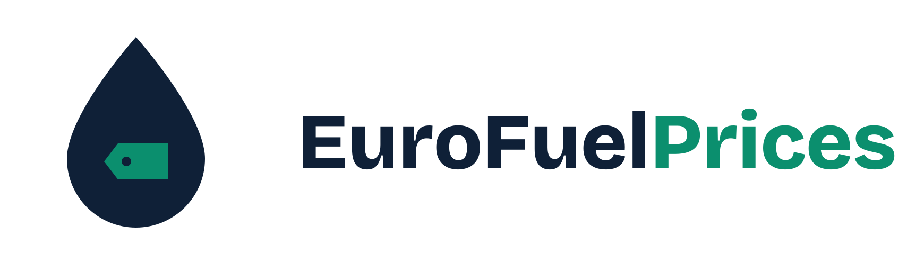

EuroFuelPrices — live fuel prices at stations across Europe
Loading…
Loading…
Enter a location or station name
Loading…
Tell us about your car and what you pay for electricity. We then show whether charging or filling up is cheaper, and what a trip costs.
Pick your model and we fill in the details. Or type your own.
Only plug-in hybrids can be compared with electricity.
Most cars: 40 to 60 litres. Or tap a quick pick:
Example: 7 means the car uses 7 litres of petrol to drive 100 km. For a plug-in hybrid, use the figure for when the battery is empty.
This is the number that decides the result. Find it on your bill.
That looks high for euro. If you enter kronor, change the currency next to the field.
Find it on your electricity bill. Sweden is roughly 1.50 to 3.50 kr per kWh including grid fees and tax. Not sure? Work it out below.
Where do you charge?What 100 km costs on electricity and on petrol, and what a trip costs.
Default: 90. Some electricity is lost as heat when charging, so 90 means 10 percent is lost.
Only matters when you buy abroad. Check your bank; 0 to 3 percent is common. Stored on this device only.
Suggestions for places in your own data work without any service. For addresses, what you type and your rounded map position are sent to photon.komoot.io (OpenStreetMap data). Switch off to keep everything on your device.

Live fuel prices at every station across Europe.